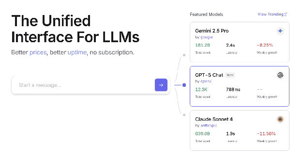
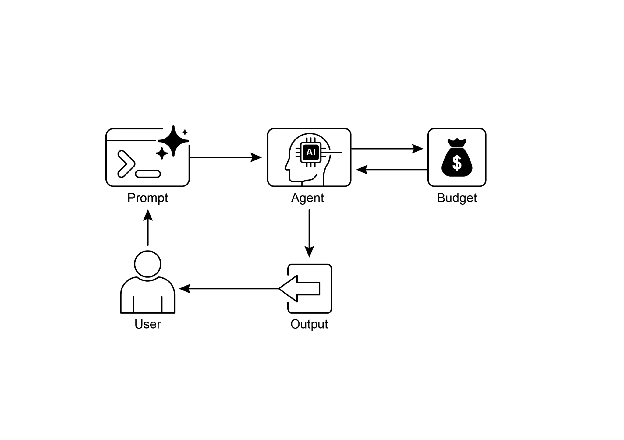

第 16 章：资源感知优化
资源感知优化使智能 Agent 能够在运行过程中动态监控和管理计算、时间和财务资源。这与简单的规划不同，后者主要关注动作序列的安排。资源感知优化要求 Agent 就动作执行做出决策，以在指定的资源预算内达成目标或优化效率。这涉及在更准确但昂贵的模型与更快速、成本更低的模型之间进行权衡，或者决定是否分配额外的计算资源以获得更精细的响应，还是返回更快但细节较少的答案。
例如，考虑一个被指派为金融分析师分析大型数据集的 Agent。如果分析师需要立即获得初步报告，Agent 可能会使用更快、更经济的模型来快速总结关键趋势。然而，如果分析师需要高度准确的预测用于关键投资决策，并且有更充裕的预算和时间，Agent 将分配更多资源来利用功能更强、速度较慢但更精确的预测模型。此类别中的一个关键策略是回退机制，它在首选模型因过载或受限而不可用时充当保障。为确保优雅降级，系统会自动切换到默认或更经济的模型，保持服务连续性而非完全失败。
实际应用与用例
资源感知优化的实际应用场景包括：
- 成本优化的 LLM 使用：Agent 根据预算约束，决定对复杂任务使用大型、昂贵的 LLM，还是对简单查询使用更小、更经济的 LLM。
- 延迟敏感操作：在实时系统中，Agent 选择更快但可能不够全面的推理路径，以确保及时响应。
- 能源效率：对于部署在边缘设备或电力受限环境中的 Agent，优化其处理过程以延长电池寿命。
- 服务可靠性回退：当主要选择不可用时，Agent 自动切换到备用模型，确保服务连续性和优雅降级。
- 数据使用管理：Agent 选择摘要数据检索而非完整数据集下载，以节省带宽或存储空间。
- 自适应任务分配：在多 Agent 系统中，Agent 根据其当前计算负载或可用时间自行分配任务。
实践代码示例
一个用于回答用户问题的智能系统可以评估每个问题的难度。对于简单查询，它使用成本效益高的语言模型，如 Gemini Flash。对于复杂查询，会考虑更强大但更昂贵的语言模型（如 Gemini Pro）。使用更强大模型的决定还取决于资源可用性，特别是预算和时间约束。该系统能够动态选择合适的模型。
例如，考虑一个使用分层 Agent 构建的旅行规划器。高级规划（涉及理解用户的复杂请求，将其分解为多步骤行程，并做出逻辑决策）将由像 Gemini Pro 这样复杂且更强大的 LLM 管理。这是需要深入理解上下文和推理能力的"规划器"Agent。
然而，一旦计划制定完成，其中的各个任务（如查询航班价格、检查酒店可用性或查找餐厅评论）本质上是简单的、重复的网络查询。这些"工具函数调用"可以由更快、更经济的模型（如 Gemini Flash）执行。这样就容易理解为什么经济模型可用于这些直接的网络搜索，而复杂的规划阶段需要更高级模型的更强智能来确保连贯且逻辑合理的旅行计划。
Google 的 ADK 通过其多 Agent 架构支持这种方法，允许构建模块化和可扩展的应用程序。不同的 Agent 可以处理专门的任务。模型灵活性使得可以直接使用各种 Gemini 模型，包括 Gemini Pro 和 Gemini Flash，或通过 LiteLLM 集成其他模型。ADK 的编排能力支持动态、LLM 驱动的路由以实现自适应行为。内置的评估功能允许系统评估 Agent 性能，可用于系统改进（参见评估和监控章节）。
接下来，我们将定义两个具有相同设置但使用不同模型和成本的 Agent。
1 | |
路由器 Agent 可以基于简单的指标（如查询长度）引导查询，其中较短的查询转到较便宜的模型，较长的查询转到更强大的模型。然而，更复杂的路由器 Agent 可以利用 LLM 或 ML 模型来分析查询的细微差别和复杂性。这个 LLM 路由器可以确定哪个下游语言模型最合适。例如，请求事实回忆的查询被路由到 Flash 模型，而需要深入分析的复杂查询被路由到 Pro 模型。
优化技术可以进一步增强 LLM 路由器的有效性。提示调优涉及精心设计提示词以指导路由器 LLM 做出更好的路由决策。在查询及其最优模型选择的数据集上微调 LLM 路由器可提高其准确性和效率。这种动态路由能力在响应质量和成本效益之间取得平衡。
1 | |
批评 Agent 评估语言模型的响应，提供具有多种功能的反馈。对于自我纠正，它识别错误或不一致，促使回答 Agent 改进其输出以提高质量。它还系统地评估响应以进行性能监控，跟踪准确性和相关性等指标，用于优化。
此外，其反馈可以为强化学习或微调提供信号；例如，持续识别 Flash 模型响应不足可以改进路由器 Agent 的逻辑。虽然不直接管理预算，批评 Agent 通过识别次优路由选择（例如将简单查询定向到 Pro 模型或将复杂查询定向到 Flash 模型，导致结果不佳）来间接管理预算。这为改进资源分配和节约成本的调整提供了依据。
批评 Agent 可以配置为仅审查回答 Agent 生成的文本，或同时审查原始查询和生成的文本，从而能够全面评估响应与初始问题的一致性。
1 | |
批评 Agent 基于预定义的系统提示词运行，该提示词概述其角色、职责和反馈方法。为此 Agent 设计良好的提示词必须清楚地确立其作为评估者的功能。它应指定批评重点领域，并强调提供建设性反馈而不仅仅是拒绝。提示词还应鼓励识别优势和弱点，并且必须指导 Agent 如何构建和呈现其反馈。
使用 OpenAI 的实践代码
该系统使用资源感知优化策略来高效处理用户查询。它首先将每个查询分类为三个类别之一，以确定最合适和最具成本效益的处理路径。这种方法避免在简单请求上浪费计算资源，同时确保复杂查询获得必要的关注。三个类别是：
- simple：用于可以直接回答而无需复杂推理或外部数据的简单问题。
- reasoning：用于需要逻辑推理或多步骤思考过程的查询，这些查询被路由到更强大的模型。
- internet_search：用于需要当前信息的问题，会自动触发 Google 搜索以提供最新答案。
代码采用 MIT 许可证，可在 Github 上获取：(https://github.com/mahtabsyed/21-Agentic-Patterns/blob/main/16_Resource_Aware_Opt_LLM_Reflection_v2.ipynb)
1 | |
这段 Python 代码实现了一个提示词路由系统来回答用户问题。它首先从 .env 文件加载 OpenAI 和 Google 自定义搜索的必要 API 密钥。核心功能在于将用户的提示词分类为三个类别：simple、reasoning 或 internet search。专用函数利用 OpenAI 模型进行此分类步骤。如果提示词需要当前信息，则使用 Google 自定义搜索 API 执行 Google 搜索。另一个函数然后生成最终响应，根据分类选择适当的 OpenAI 模型。对于互联网搜索查询，搜索结果作为上下文提供给模型。主 handle_prompt 函数编排此工作流，在生成响应之前调用分类和搜索（如果需要）函数。它返回分类、使用的模型和生成的答案。该系统有效地将不同类型的查询引导到优化的方法以获得更好的响应。
实践代码示例（OpenRouter）
OpenRouter 通过单个 API 端点提供对数百个 AI 模型的统一接口。它提供自动故障转移和成本优化，可通过您首选的 SDK 或框架轻松集成。
1 | |
这段代码片段使用 requests 库与 OpenRouter API 交互。它向聊天完成端点发送带有用户消息的 POST 请求。请求包括带有 API 密钥和可选网站信息的授权头。目标是从指定的语言模型（在本例中为"openai/gpt-4o"）获得响应。
OpenRouter 提供两种不同的方法来路由和确定用于处理给定请求的计算模型：
- 自动模型选择：此功能将请求路由到从一组精选可用模型中选择的优化模型。选择基于用户提示词的特定内容。最终处理请求的模型的标识符在响应的元数据中返回。
1 | |
- 顺序模型回退：此机制通过允许用户指定分层模型列表来提供运营冗余。系统将首先尝试使用序列中指定的主要模型处理请求。如果此主要模型由于任何错误条件（如服务不可用、速率限制或内容过滤）而无法响应，系统将自动将请求重新路由到序列中的下一个指定模型。此过程继续，直到列表中的模型成功执行请求或列表耗尽。操作的最终成本和响应中返回的模型标识符将对应于成功完成计算的模型。
1 | |
OpenRouter 提供详细的排行榜（https://openrouter.ai/rankings），根据可用 AI 模型的累积 token 生成对其进行排名。它还提供来自不同提供商（ChatGPT、Gemini、Claude）的最新模型（见图 1）

图 1：OpenRouter 网站（https://openrouter.ai/）
超越动态模型切换：Agent 资源优化的范围
资源感知优化对于开发在现实世界约束内高效运行的智能 Agent 系统至关重要。让我们看看一些额外的优化技术：
动态模型切换是一项关键技术，涉及根据手头任务的复杂性和可用计算资源战略性地选择 LLM。当面对简单查询时，可以部署轻量级、成本效益高的 LLM，而复杂的、多方面的问题则需要利用更复杂和资源密集型的模型。
自适应工具使用和选择确保 Agent 可以智能地从一套工具中进行选择，为每个特定子任务选择最合适和高效的工具，并仔细考虑 API 使用成本、延迟和执行时间等因素。这种动态工具选择通过优化外部 API 和服务的使用来提高整体系统效率。
上下文修剪和摘要在管理 Agent 处理的信息量方面发挥着至关重要的作用，通过智能摘要和选择性保留交互历史中最相关的信息，战略性地最小化提示词 token 计数并降低推理成本，防止不必要的计算开销。
主动资源预测涉及通过预测未来工作负载和系统需求来预测资源需求，这允许主动分配和管理资源，确保系统响应性并防止瓶颈。
成本敏感探索在多 Agent 系统中将优化考虑扩展到包括通信成本以及传统计算成本，影响 Agent 用于协作和共享信息的策略，旨在最小化整体资源支出。
节能部署专门针对资源严格约束的环境，旨在最小化智能 Agent 系统的能源足迹，延长运营时间并降低整体运行成本。
并行化和分布式计算感知利用分布式资源来增强 Agent 的处理能力和吞吐量，将计算工作负载分布到多台机器或处理器上，以实现更高的效率和更快的任务完成。
学习型资源分配策略引入学习机制，使 Agent 能够根据反馈和性能指标随时间调整和优化其资源分配策略，通过持续改进来提高效率。
优雅降级和回退机制确保智能 Agent 系统即使在资源约束严重时也能继续运行，尽管可能以降低的能力运行，优雅地降低性能并回退到替代策略以维持运营并提供基本功能。
概览
是什么：：资源感知优化解决了在智能系统中管理计算、时间和财务资源消耗的挑战。基于 LLM 的应用程序可能既昂贵又缓慢，为每项任务选择最佳模型或工具通常效率低下。这在系统输出的质量与产生它所需的资源之间创建了基本权衡。如果没有动态管理策略，系统无法适应不同的任务复杂性或在预算和性能约束内运行。
为什么：标准化解决方案是构建一个智能监控和分配资源的 agentic 系统。此模式通常使用"路由器 Agent"首先对传入请求的复杂性进行分类。然后将请求转发到最合适的 LLM 或工具——对于简单查询使用快速、经济的模型，对于复杂推理使用更强大的模型。"批评 Agent"可以通过评估响应质量来进一步改进流程，提供反馈以随时间改进路由逻辑。这种动态、多 Agent 方法确保系统高效运行，在响应质量和成本效益之间取得平衡。
经验法则：在以下情况下使用此模式：在 API 调用或计算能力的严格财务预算下运行，构建对延迟敏感的应用程序（其中快速响应时间至关重要），在资源受限的硬件（如电池寿命有限的边缘设备）上部署 Agent，以编程方式平衡响应质量和运营成本之间的权衡，以及管理复杂的、多步骤的工作流（其中不同任务具有不同的资源需求）。
视觉摘要

图 2：资源感知优化设计模式
关键要点
- 资源感知优化至关重要：智能 Agent 可以动态管理计算、时间和财务资源。根据实时约束和目标做出关于模型使用和执行路径的决策。
- 可扩展性的多 Agent 架构：Google 的 ADK 提供多 Agent 框架，实现模块化设计。不同的 Agent（回答、路由、批评）处理特定任务。
- 动态、LLM 驱动的路由：路由器 Agent 根据查询复杂性和预算将查询引导到语言模型（简单查询使用 Gemini Flash，复杂查询使用 Gemini Pro）。这优化了成本和性能。
- 批评 Agent 功能：专用批评 Agent 提供自我纠正、性能监控和改进路由逻辑的反馈，增强系统有效性。
- 通过反馈和灵活性进行优化：批评和模型集成灵活性的评估能力有助于自适应和自我改进的系统行为。
- 其他资源感知优化技术：其他方法包括自适应工具使用和选择、上下文修剪和摘要、主动资源预测、多 Agent 系统中的成本敏感探索、节能部署、并行化和分布式计算感知、学习型资源分配策略、优雅降级和回退机制，以及关键任务的优先级排序。
结论
资源感知优化对于智能 Agent 的开发至关重要，使其能够在现实世界约束内高效运行。通过管理计算、时间和财务资源，Agent 可以实现最佳性能和成本效益。动态模型切换、自适应工具使用和上下文修剪等技术对于实现这些效率至关重要。高级策略，包括学习型资源分配策略和优雅降级，增强了 Agent 在不同条件下的适应性和弹性。将这些优化原则集成到 Agent 设计中对于构建可扩展、强大和可持续的 AI 系统至关重要。
参考文献
- Google's Agent Development Kit (ADK): https://google.github.io/adk-docs/
- Gemini Flash 2.5 & Gemini 2.5 Pro: https://aistudio.google.com/
- OpenRouter: https://openrouter.ai/docs/quickstart